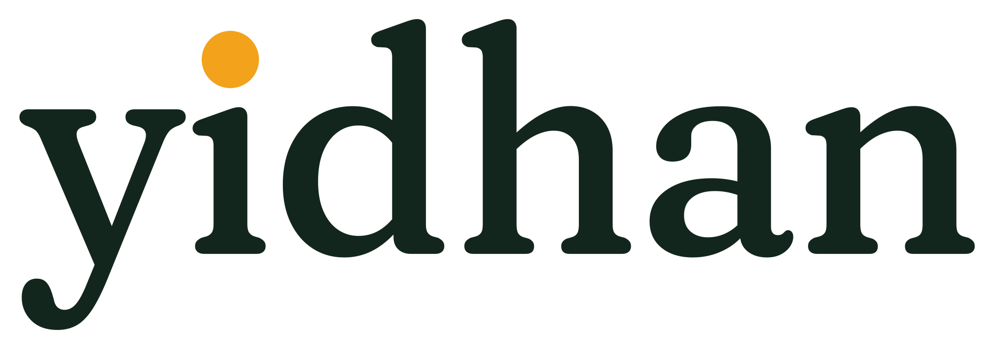
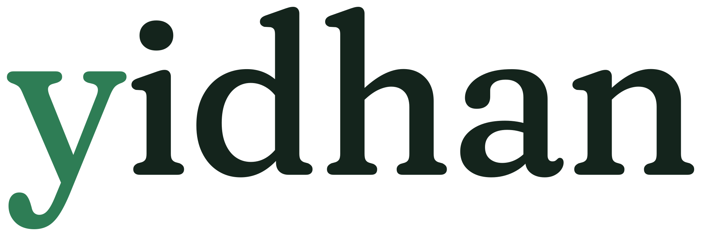

The leaf that is a page
Final-artwork review for step 1 of the logo plan (docs/plans/2026-11-09-logo-and-icons-plan.md). The owner decides every open item. Each section shows a proposal, not a decision.
Sources: images/brand/source/*.svg, drawn by scripts/brand/leaf.py. Large sizes render at your screen's pixel density. The "actual pixels" strips render at 1x and are then enlarged, so you see what a 1x screen sees.
The mark
mark.svg
mark-on-dark.svg
lockup.svg: the mark runs from the top of the d to the bottom of the y. No letter in the lockup.
lockup-on-dark.svg
Every size, 16 to 1024
The drawing changes with size: the small mark up to 48px, the plain mark from 64 to 96px, the letter from 128px. That is the proposed size rule (item 1).
Bare mark
Icon tile, near-white
Icon tile, dark green
512 and 1024
512, near-white
512, dark green
1024, bare mark
Actual pixels at 1x, enlarged 8 times
In a browser tab
This page's own favicon is tile-light-small.svg. The mocks below use 16px images. A tab shows the favicon unmasked, so the small tiles carry their own rounded corners.
Android home screen
The tile is full bleed. Each phone applies a different launcher mask. The dashed circle on the first phone is the maskable safe zone (80% of the icon). The mark reaches 92% of its radius.
The other icons are generic stand-ins drawn for this board, not other apps' real icons.
Beside other writing apps
Generic stand-ins for the common shapes of writing-app icons: a yellow legal pad, a dark tile with a pen, a blue page, a black tile with a letter, a purple feather, a white tile with a square. None is a real app's icon.
What the sketch does not settle
1. When the letter shows proposal
Show the letter only when it would render at 12px or taller. In practice: the bare mark from 96px, the tile from 128px (the letter is 74% as big on the tile). Below that, the sun is plain. The splash, About, the large app icon and the OG image get the letter; the header, favicons and the 49 to 127px icons do not. At 13 to 16px the letter reads as a knot, not a letter; it becomes legible at about 20px (the 192px tile). If the owner wants it legible wherever it appears, raise the rule to 192px for the tile.
Left of each pair: plain. Right: with the letter. The number under each is the letter's rendered height.
2. The letter needs a heavier cut proposal
Use the "medium" cut: the Inbax outline with a 0.22-unit stroke added (about 1.3 times the thin strokes). "Heavy" fills in the crossing at the bottom at 96 and 128px. Ink or dark green: dark green, as decided; ink is shown for comparison. This is a stroke on the text outline, not a redrawing. A Tamil reader must check it, and Part 2 should flatten the stroke into the path before export.
3. The icon tile owner picks
Both are drawn. Points for each: the near-white tile matches the light page and keeps the leaf the green everyone sees in the app, but it nearly vanishes on white tab bars and white launchers. The dark green tile holds its edge everywhere and makes the marigold sun brighter, but the leaf becomes the light green, so the icon's green is not the app's green. My lean: dark green for the app icon, and either works for the favicon. See every section above.
tile-light.svg
tile-dark.svg
tile-light-small
tile-dark-small
4. The wordmark's i proposal
A plain i everywhere. With the mark beside it, the old sun on the i makes two suns in the lockup, and the second one competes with the mark. The plain i also keeps the wordmark a straight setting of Fraunces.
plain i (proposed)

the shipped sun-dot wordmark beside the mark: two suns
wordmark-green-y.svg alone5. Small sizes proposal
A separate drawing on a 16-pixel grid: leaf 8 by 9, sun radius 3, a 1px gap, and one 1px line. It is pixel-snapped at 16, 32 and 48. Use it from 16 to 48px. The one-line version keeps a hint of the page; the no-line version is cleaner at 16. My lean: one line. The full drawing scaled down is shown for comparison: its gap and lines turn to mush at 16 and 24.
6. One colour proposal
One fill for the sun and the leaf. The gap separates them, the lines are cut out, and the letter, when shown, is cut out of the sun. Use it for print, embossing, notification icons and anywhere that takes one colour. Shown in ink and reversed to white.
mark-mono.svg
mark-mono-plain
32
16
reversed to white (preview filter)
24 reversed, e.g. a notification icon
Not done on this board
No search of the app stores for look-alike marks (plan step 4). No trademark clearance. No check of the letter by a Tamil reader. No PNG export; that is Part 2.